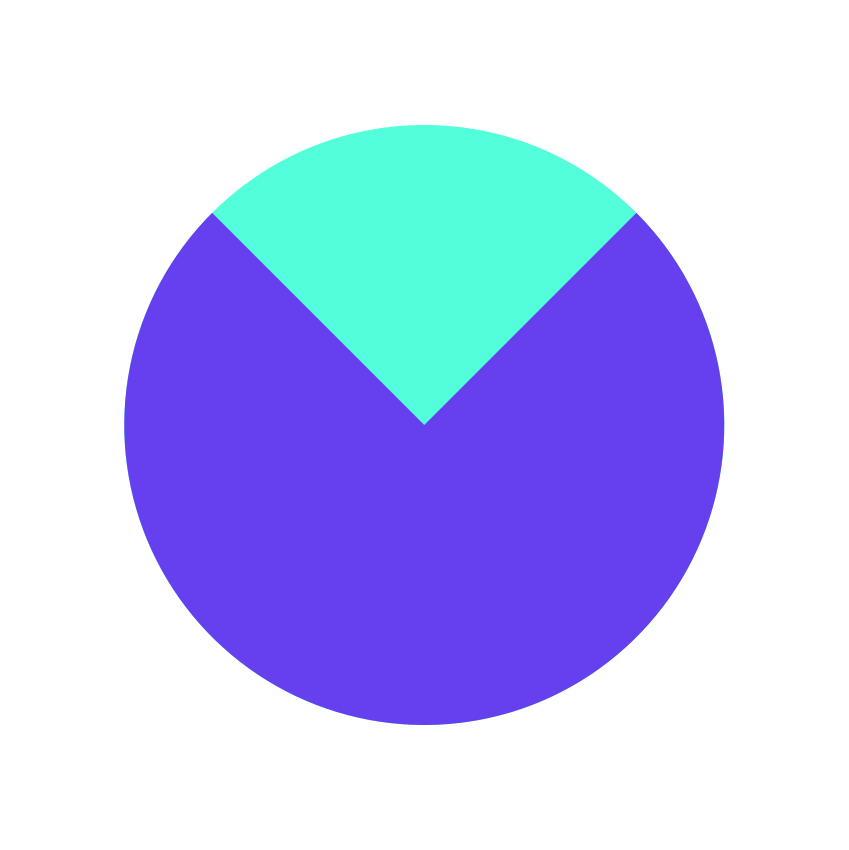
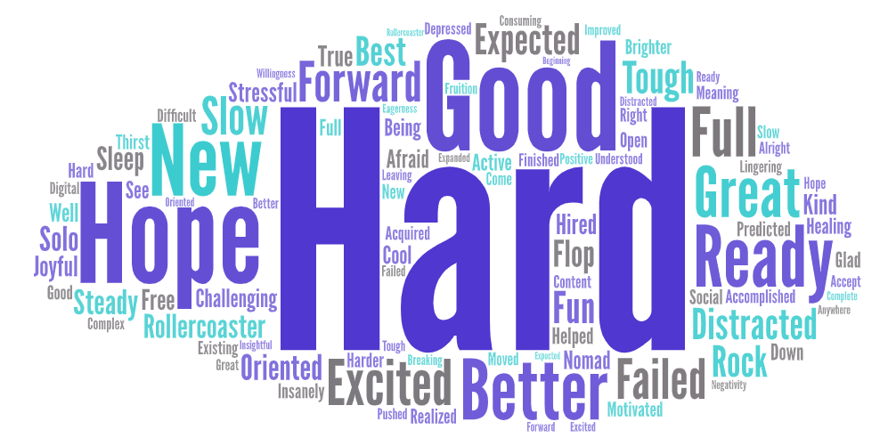

 The Maker Report
Results
2019
≡
×
Sections
Summary
Location, age, gender
Full-time vs. part-time
Part-time makers
Maker info
No-code, code, design
Product type, target group
Motivation, focus, ideas
Goals
Revenue
Community
2019 in words
Future of the maker report
Prev:
Community
Next:
Future of The Maker Report
2019 in words
Makers summarized their year for The Maker Report and these words were used most often.

Tweet
Share
Prev:
Community
Next:
Future of The Maker Report